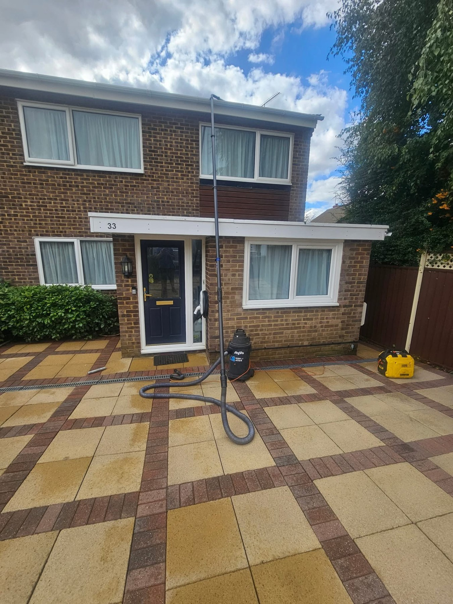
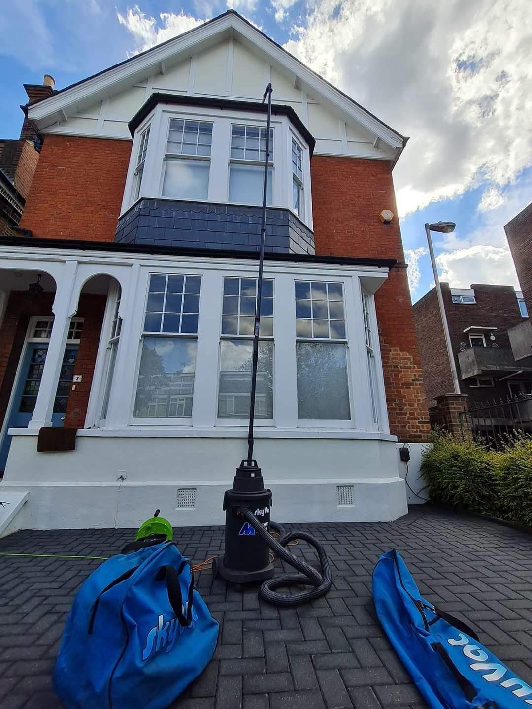
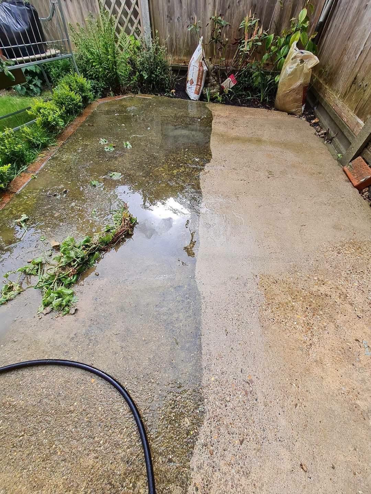
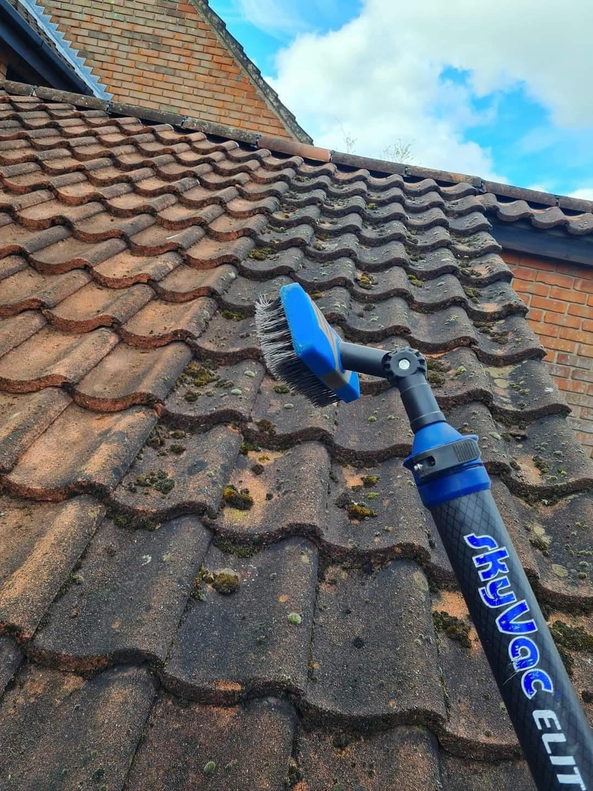
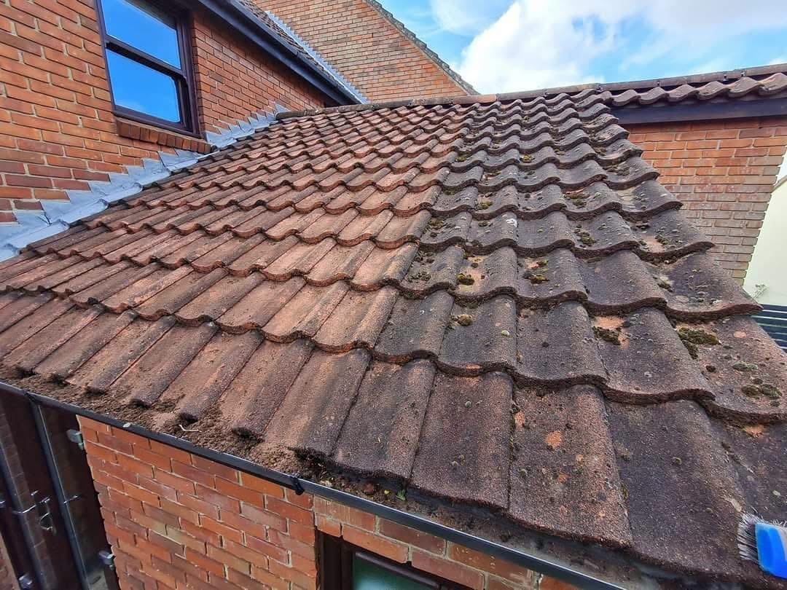
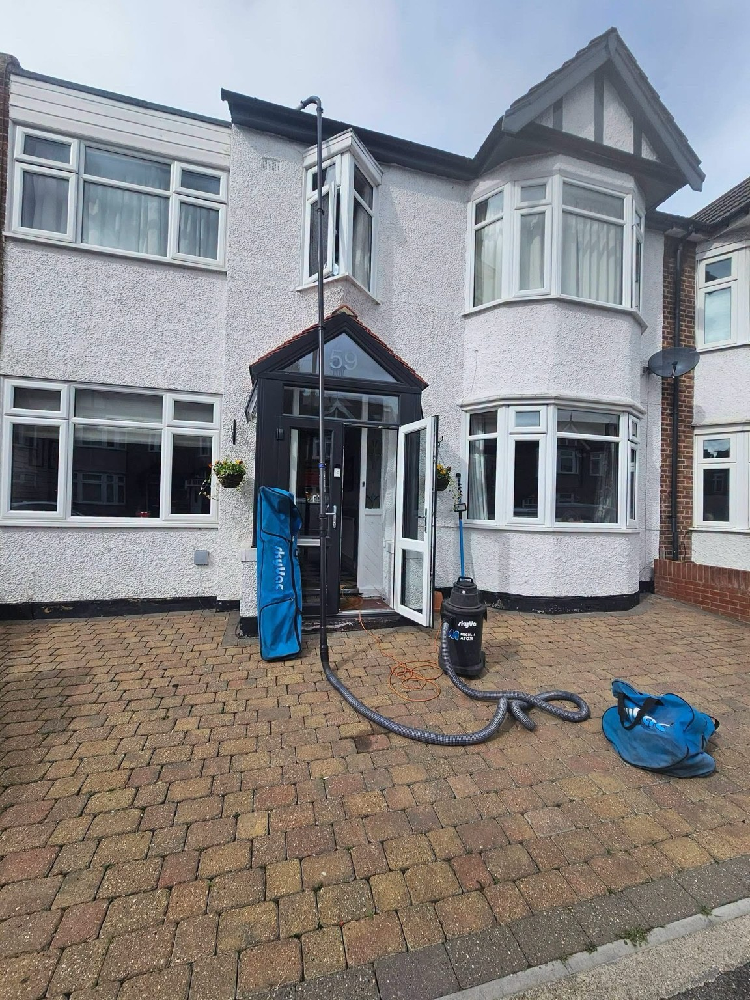
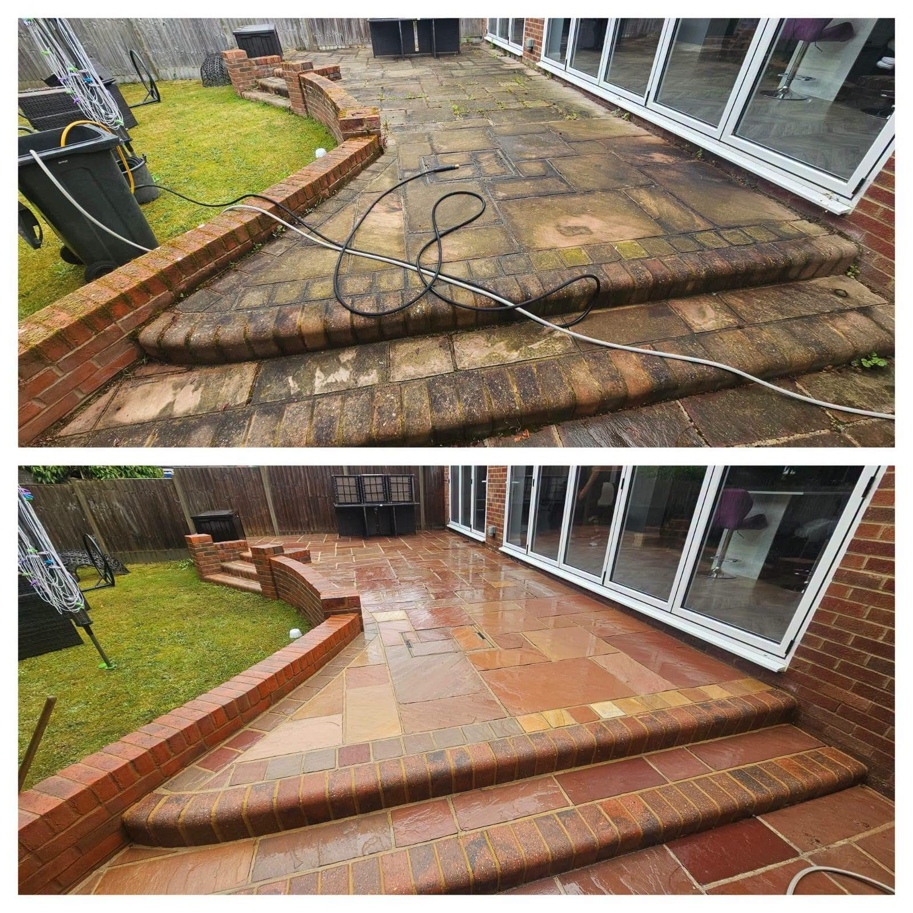
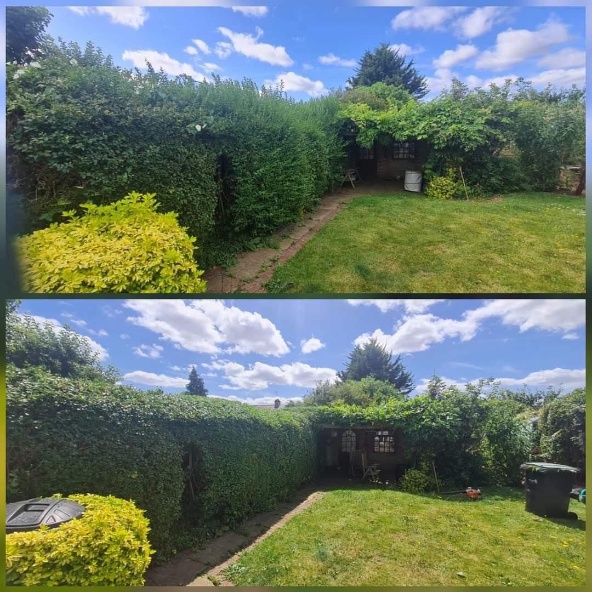
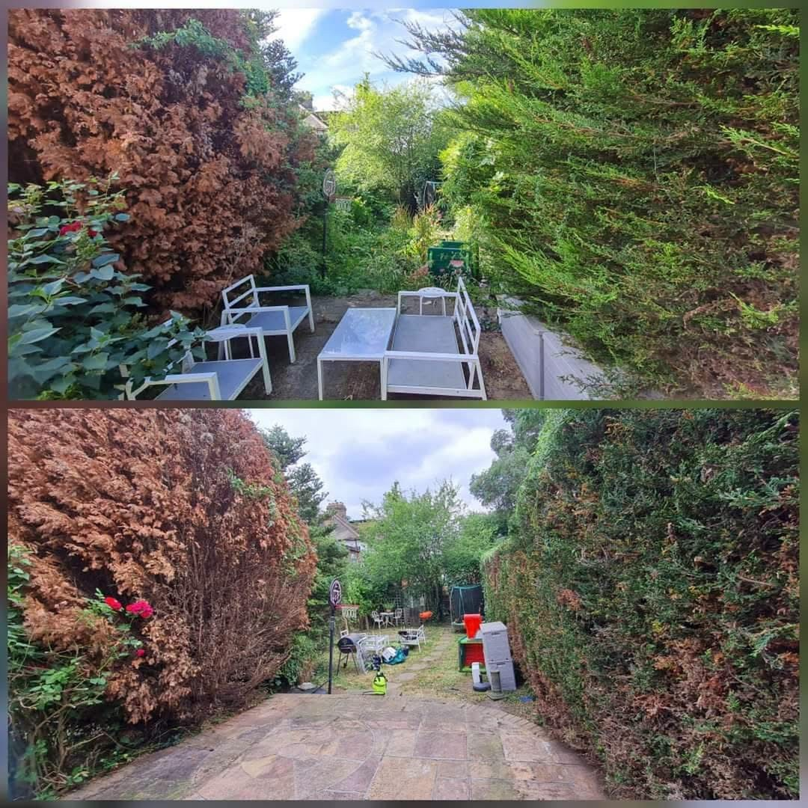

Jet WashingDrives, patios, walls & outdoor surfaces
Gutter ClearingHelp your gutters flow freely
Lower-Roof ScrapingDiscuss moss removal from lower roofs
Hedge TrimmingTidy boundaries and garden hedges
EXTERIOR CLEANING & MAINTENANCE
The same space.
A brighter finish.
Clean Cut offers jet washing for driveways, patios, artificial turf, walls and tennis courts, alongside gutter clearing, lower-roof scraping and hedge trimming. Send photographs and your postcode to discuss the work and availability.
Request a quote →

DRIVEWAYS & PATIOS
More colour.
Less grime.
A clean driveway makes a different first impression. A refreshed patio gives you more reason to enjoy your garden. Explore our supplied work photographs and get in touch to discuss your surfaces.
Discuss your project →
CLEAN CUT AT WORK
Real work. Visible results.
Supplied project photographs, shown without cropping. Open any image to see the full view.



BEFORE & AFTER
A fresh look.
A tidier space.
These supplied comparison images show the changes to patios and garden hedges. Each complete image is displayed so both views remain visible.
Discuss your project →


CLEAN CUT · WANSTEAD
Care for your property.
Start with a conversation.
Based in Wanstead, Clean Cut provides jet washing and gutter cleaning services, with lower-roof scraping and hedge trimming also available. Contact us with your postcode and photographs to discuss your property.
01
Your surfaces, your requirements
Tell us what needs cleaning and the result you have in mind.
02
More than jet washing
Gutter clearing, lower-roof scraping and hedge trimming help keep your outdoor spaces maintained.
03
Recommended by customers
Our supplied Facebook profile shows 100% recommend from 45 reviews.
REQUEST A QUOTE
Tell us about
your space.
Tell us about your surfaces and postcode. This form opens WhatsApp with your enquiry ready for you to send. You can attach your photographs in WhatsApp.
CLEAN CUT
Ready for a cleaner outdoor space?
Call Clean Cut: 07990 572344
Instagram: @cleancut.connor